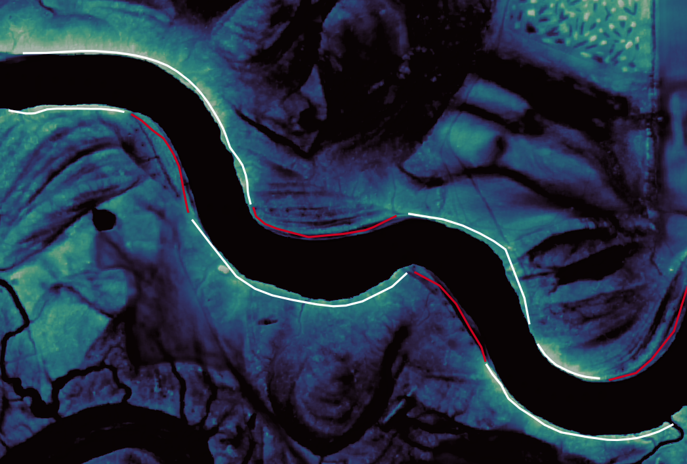
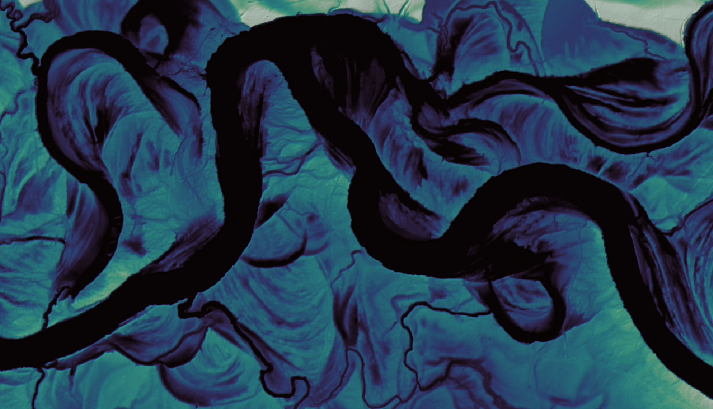

Identifying natural river levees in lidar#
Our main task that we would like you to accomplish is to use your eyes and pattern recognition capabilities to identify natural river levees in high-resolution topography data. To do this, it will be imperative that you visualize and evaluate the data in a consistent way, so that our evaluations are all based on the same methodology.
Visualizing high-resolution topography#
See this section on the data entry page.
This method of visualizing the topography will reveal all kinds of things to you.
Our definition of natural levees#
Broadly speaking, we are defining levees as a raised ridge of topography near the river channel, regardless of how it got there. That is to say, if the topography is higher near the river than it is further away on average, then we would consider a levee to be present. In general, we would like you to make your determinations of levee presence or absence based on the full two-dimensional view of the topography.
Making a determination#
Some of these heuristics you will use to identify levees will depend a little bit on what kind of color map you choose when you are working with the data. Generally speaking I tend to choose color maps where dark values represent low elevations and light values represent high elevation. In this framework, levees mostly appear as pale or lighter zones that surround a river channel, which is usually darker than the surrounding floodplain. That said, levees can vary widely in their texture, scale (size), and slope. Levees can be oriented perpendicular to the channel, oblique to the channel, and they can point up or downstream. Sometimes they look like little river deltas covered in small channels on top of them, and sometimes they are quite smooth. Here is an examples of levees on a river that are clear and present:
In this picture, note that the river channel itself is black, so low topography is represented by dark colors, and high topography is represented by light blue colors. On both sides of the channel one can see what appear sort of like halos, or bright bands of elevated topography situated on either side of the river. The levees have some texture, that is if you look closely some of them have small channels cutting across the riverbank. In addition the floodplain itself is not very flat, there are in fact lots of ridges and swales which make the surface topography pretty complicated. We are only interested in the area immediately surrounding channel, and so you will have to use your judgment as to what is “near” the channel and what is “far away.”
You will note that river levees are not continuous on either side of the river in fact, in this example, there are several gaps. Here’s the same image, but I’ve annotated where I think levees are present in white, and where they are absent in red.

So, for this example a natural levee is present on either side of the river over most of the length that I have shown in this image. If this was all we had to work with, then we would say that at any given point along the river you are very likely to find a natural levee on either bank of the river. Thus, the levees are “abundant” here.
Here is another example from a different river, where once again the topography near the river channel is pretty complicated.

In this case, because the topography is so complicated and any ridges near the channels may be oriented at different angles to the river, They often do not appear as ridges of high topography adjacent to the channel that parallel the channel. In a few places you can see levees that parallel the channel and are clear examples of high topography near the channel. However they don’t make up the majority of the topography and landforms at the margins of the channel. Thus in this case, the mapper indicated that levees are “sparse” here.
Reporting confidence and ambiguity.#
If you look at this image, and disagree with what that previous mapper assessed, I think that would be totally reasonable. In this case, the decision about whether levees are abundant or sparse is a bit ambiguous. To represent this, you might note a lower confidence in your assessment, (see how in the data entry page). In general, if levees are unambiguously flanking the river everywhere, then rate your assessment with high confidence. If you are not certain whether you see levees on more or less than 50% of the channel, mark a lower confidence level (medium or low). If the floodplain topography is quite complicated (like in the image above) and identifying levees is just plain hard, you might note that and give a lower confidence level as well.
Leverage group expertise#
If you are not certain about your assessment of a particular reach, or you feel like you need some help identifying levees from the lidar data, ask for help! These landforms are enigmatic, and they defy unambiguous classification. You will have to train yourself to have a “search image” for levees. Luckily, there is a team of people who have been doing this, so leverage the expertise of your teammates.
Chain of appeal
If you are uncertain about your assessment for a given river reach, first ask your fellow mappers. If the two of you do not agree, or are still uncertain, then ask Eric for advice, if all of us together are uncertain, we will involve Doug. ``